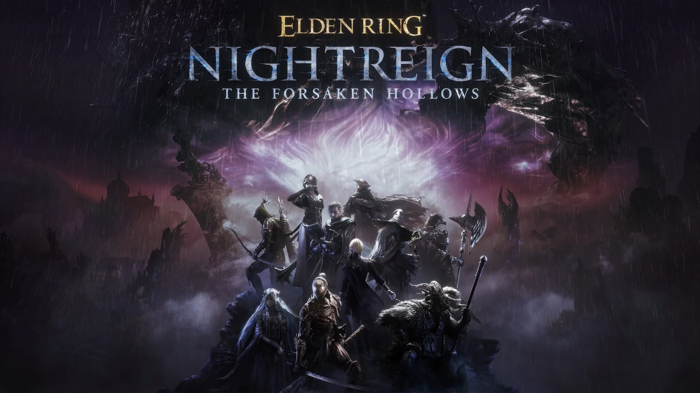

About Elden Ring Nightreign The Forsaken Hollows
The Forsaken Hollows is a major DLC expansion for Elden Ring Nightreign, releasing on December 4th, 2025. It adds two new playable Nightfarers, the Scholar and the Undertaker, each bringing unique abilities that expand team strategies. The DLC introduces the Great Hollow, a vast underground region filled with ruins, shifting terrain, and dangerous enemies. Players will face new bosses, uncover hidden lore, and adapt to a new events, which changes the landscape as battles progress. Like the base game, the expansion focuses on cooperation and survival, but raises the stakes with tougher challenges and deeper exploration.
The Forsaken Hollows also enhances the atmosphere of Nightreign’s world by diving deeper into the mysteries of Limveld and the spreading darkness. The new Nightfarers encourage players to experiment with magic, faith, and strength-based builds while working together to survive the changing environment. The Great Hollow itself serves as both a test of endurance and a place of discovery, with secrets hidden beneath the surface. Overall, The Forsaken Hollows expands on everything players loved about Nightreign teamwork, tension, and a haunting world that rewards courage and curiosity.
